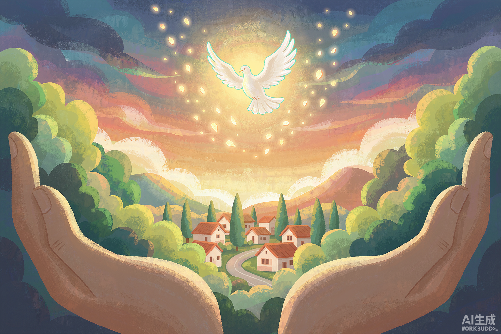

“新学期我有了自己的书桌和台灯。晚上写作业的时候，我总觉得星星在陪我。”
雨
小雨 · 云南山区，9 岁 · 学习桌计划
”
星轨计划是我们把游戏收入的一部分，交给真正需要帮助的人的方式。项目不限于国内——从云南的山村到内罗毕的学校，我们和当地机构一起，把事做完、把账公开。

国内三个、海外三个。每个项目都有明确的执行方、预算与验收方式，进度条为当前资金执行比例。
与本地公益机构、学校直接对接，资金由机构监管账户拨付。
通过具备跨境执行资质的合作机构落地，按当地法规披露收支。
“新学期我有了自己的书桌和台灯。晚上写作业的时候，我总觉得星星在陪我。”
“图书角建起来了，600 本书。孩子们现在每天都在讨论《星痕》里的星图。”
“井打好以后，孩子们不用再走四公里去打水。他们现在有更多时间待在教室里。”
收款码由平台审核后展示。未来这里会放入受助人本人的收款码，善款直达，不经我们手。
说明：海外项目通过具备资质的合作机构执行，单笔超过等值 5 万元人民币的支出需提供执行报告与票据。星轨计划不接受未成年人捐款。